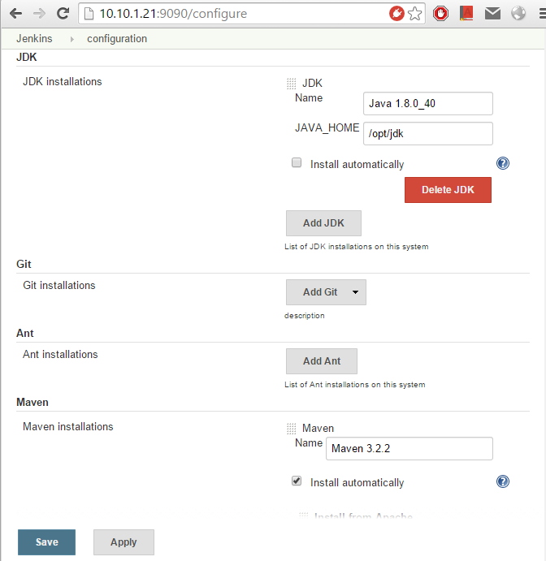

1. Start Jenkins Web
java -jar jenkins.war
--httpPort option:
java -jar jenkins.war --httpPort=8081
--logfile
java -jar jenkins.war --logfile=/var/log/jenkins.log
2. Congure JDK and Build
Home page -> Manage Jenkins

3. Install Git Plugin
4. Create a Build Job
END